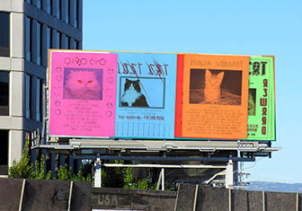
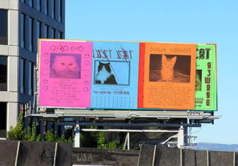
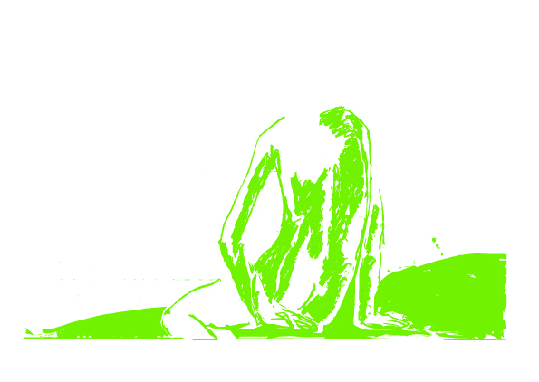

abcdefghijklmnopqrstuvwxyz
A Gothic Marker
12345678910
abcdefghijklmnopqrstuvwxyz
A Gothic Marker
A Gothic Marker
A Gothic Marker
A Gothic Marker
Diamonds are forever
They won't leave in the night
I've no fear that they might
Desert me
FUNGI
FUNGI
FUNGI
dit is staalhard,
de basis
this is a script font you can finisch it
smile you are dying
smile you are dying
Mr. and Mrs. Dursley, of number four, Privet Drive, were proud to say that they were perfectly normal, thank you very much. They were the last people you’d expect to be involved in anything strange or mysterious, because they just didn’t hold with such nonsense.
Mr. Dursley was the director of a firm called Grunnings, which made drills. He was a big, beefy man with hardly any neck, although he did have a very large mustache. Mrs. Dursley was thin and blonde and had nearly twice the usual amount of neck, which came in very useful as she spent so much of her time craning over garden fences, spying on the neighbors. The Dursleys had a small son called Dudley and in their opinion there was no finer boy anywhere.
The Dursleys had everything they wanted, but they also had a secret, and their greatest fear was that somebody would discover it. They didn’t think they could bear it if anyone found out about the Potters. Mrs. ter and her good-for-nothing husband were as unDursleyish as it was possible to be.
This is a reversed contrast
sartnoc deserever a si sith
Bird can't fly in a cage
To what ExTEnT caN A roboT ASSESS thE arTISTic aSpEcT of gymNASTIcS
All i see are smileys Een smiley is een eenvoudig tekeningetje van een lachend gezichtje, vandaar de naam (smile is Engels voor glimlachen). Het begrip smiley wordt gebruikt voor gelijkaardige gezichtjes die andere gemoed stoestanden uitbeelden.
Vervuiling door microplastics mogelijk groter dan
Kung-fu fighting
On your roller skates
Run with scissors through a chip and fryer fight
Go into business with a grizzly bear
On your roller skates
So who you gonna call?
The martini police
Baby, that isn't how they look tonight, oh no
It took the light forever to get to your eyes
Maybe I was a little too wild in the 70s
Rocket-ship grease down the cracks of my knuckles
Karate bandana
Warp speed chic
666
abcdefghijklmnopqrstuvwxyz
a game of chess is like a sword fight you must think before you move
{*#@ %$*}
Letters made out of letters
Make you want to move your dancing feet To the rescue, here I am Want you to know just if you can Where I stand, know, know, know, where I stand
Gon' bite the dust, can't fight with us
M'n papa en de mula in de mix da's guacamole
0123456789
This is the bold version of The Gothic marker Family. This font is the base of the family. A Gothic marker started from the construction and forms of Gothic writings. During the designing process the letters were simplified. The result was the combination of gothic writings and the writings of a fat marker. All the typefaces of this family can be put on top of each other, when put in different colors you can use different colors in your letters and text.
This is the light version of The Gothic marker Family. The gaol of this fotn was to draw the letters as thin as posible. A Gothic marker started from the construction and forms of Gothic writings. During the designing process the letters were simplified. The result was the combination of gothic writings and the writings of a fat marker. All the typefaces of this family can be put on top of each other, when put in different colors you can use different colors in your letters and text.
This is the regular version of The Gothic marker Family. This font is made out of the bold version. The idea was that the white of the letter grows so the letter itself shrinks. A Gothic marker started from the construction and forms of Gothic writings. During the designing process the letters were simplified. The result was the combination of gothic writings and the writings of a fat marker. All the typefaces of this family can be put on top of each other, when put in different colors you can use different colors in your letters and text.
These are decorations to add to the capitals. They are basd on the Miniatures of capitals in manuscripts. They can be put on top of the other fonts of the family in the same or an other color.
This typeface is made of the Nummer "8".
Number 22: Ruit(diamond) of "Formulier".
Number 13: Fungi of "Formulier".
This was an experiment about deifferent forms, Oganic forms in combination with geometric forms.
Number 6: Vervormde smileys (distorted smileys) of "Formulier".
The first appearance of smileys in pino type!
This font got parts of 2 different fonts. While I was changing "Basis" (16) into the reverse contrast (18) I got this font. Certain parst are stil from the regular and some are allready from the reverse contrast.
I Made 10 dingbat typeface of drawings. This is the first of it.

I Made 10 dingbat typeface of drawings. This is the second of it.
I Made 10 dingbat typeface of drawings. This is the third of it.
I Made 10 dingbat typeface of drawings. This is the forht of it.

I Made 10 dingbat typeface of drawings. This is the fifth of it.

I Made 10 dingbat typeface of drawings. This is the sixth of it.

I Made 10 dingbat typeface of drawings. This is the seventh of it.

I Made 10 dingbat typeface of drawings. This is the eight of it.

I Made 10 dingbat typeface of drawings. This is the ninthe of it.

I Made 10 dingbat typeface of drawings. This is the tenth of it.

This font is based on the idea of letters in human possitions. The letters are siting down, stretching out or squatting.
Here are the smileys again! Every part of a letter is a part of a smiley. Basicly these letters are compositions with parts of a smiley based on the construction of a letter.
A suggestion of a handwriting.
A homage to the beauty of nature.
A homage to the beauty of nature. These are leaf from the Esdoorn.
A homage to the beauty of nature. These are leaf from the Red Oak.
A homage to the beauty of nature. These are leaf from the Oak.
A homage to the beauty of nature. The capitals are leafs from the and the lowercases are
A homage to the beauty of nature. These are leaf from the beech.
number 33: bewegingsonscherpte
Number 39 : Storing Light of "Formulier".
Number 40: Storing Regular of "Formulier".
Number 42: Storing Bold of "Formulier".
Number 34 : bewegings onscherpte of "Formulier".
Number 25: krabbel schrift of "Formulier".
Number 24: krabbels negatief of "Formulier".
Number 28 : Krabbeld of "Formulier".
Number 31: krabbels schreven of "Formulier".
Number 27: krabbels basis of "Formulier".
Number 15: guns of "Formulier". Stay out of the gunfights!
Number 47: verbindingen (conections) of "Formulier".
Number 49: font-verbindingen-schreven
Number 48: gothische-bogen
This is the Bald family. A very bold black typeface. This is number 53: bald-rond
This is the Bald family. A very bold black typeface. This is number 54: bald-scherp.
This is the Bald family. A very bold black typeface. This is number 64: bald-black.
This is the Bald family. A very bold black typeface. This is number 70: bald-light.
This is the Bald family. A very bold black typeface. This is number 82: bald with serifs.
bald
A game of chess is like a sword fight, you must think first, before you move. A scentence of the film 'Shaolin & Wu Tang', sampled by the wu tang clan on the album the 36 chambers. I got inspired by this scentence and made a typeface of it.
Number 69: onderdelen_zijn_letters. These letters are constructed with letters.
74: onderdelen zijn letters; bald
73: onderdelen zijn letters; a game of chess
75: onderdelen zijn letters; storing
80: onderdelen zijn letters; zon
79: zon
a-fight
number 60: arabisch-western. Probably one of my favourite font.

Alle fonts van Pino Type (Pepijn De Jonckheere) is in licentie gegeven volgens een Creative Commons Naamsvermelding 4.0 Internationaal-licentie.